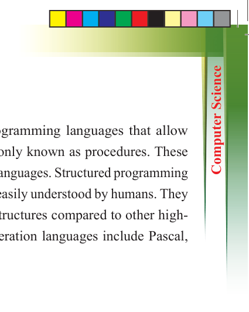
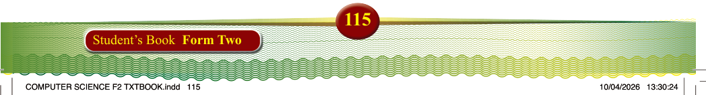

115
Student’s Book Form Two
Third generation (high-level languages)
Third-generation languages (3GLs) refer to programming languages that allow
programs to be divided into subprograms, commonly known as procedures. These
languages are often called structured or procedural languages. Structured programming
languages are designed to be simple, readable, and easily understood by humans. They
use a limited number of straightforward control structures compared to other high- level languages. Common examples of third-generation languages include Pascal,
FORTRAN, COBOL, BASIC, Ada, and C.
Fourth generation (very high-level languages)
Fourth-generation languages are designed to be closer to human language, making them easier to learn and use. They often incorporate graphical user interfaces (GUIs)
and support event-driven programming, where the flow of the program is determined
by user actions such as mouse clicks and keyboard input. These languages frequently
use drop-down menus and forms to facilitate user interaction. Fourth-generation
languages are commonly used for designing websites, developing applications, and managing databases. Examples include Python, Ruby, SQL, PHP, JavaScript, and
Visual Basic.
Fifth generation languages
Fifth-generation languages (5GLs) represent the most advanced category of
programming languages. They are designed to enable computers to solve problems
with minimal or no human intervention. Unlike traditional programming languages that
require developers to write detailed step-by-step algorithms, 5GLs focus on defining
problems using constraints and logical relationships. The system then determines
the solution automatically. These languages often include advanced tools such as
application generators and inference engines, which significantly reduce the need
for manual coding. As a result, 5GLs are especially valuable in fields like artificial intelligence and expert systems. Figure 3.6 shows the hierarchy of the generation of languages.